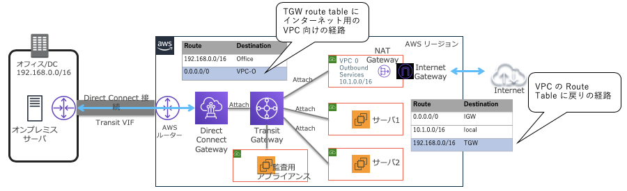

トップページ
作成日：2026/01/15 20:29:28
更新日：2026/05/01 12:20:22
ANS学習
AWS資格/公式
ANS試験概要
ANS試験ガイド/シラバス
- ANS試験のコンテンツドメイン
- 第1分野: ネットワーク設計 (採点対象コンテンツの 30%)
- 第2分野: ネットワーク実装 (採点対象コンテンツの 26%)
- 第3分野: ネットワークの管理と運用 (採点対象コンテンツの 20%)
- 第4分野: ネットワークのセキュリティ、コンプライアンス、ガバナンス
(採点対象コンテンツの 24%)
- 試験内容の概要
- 1.1:グローバルアーキテクチャ
- 1.2:DNS ソリューション
- 1.3:ロードバランシング
- 1.4:モニタリング
- 1.5:オンプレミスネットワーク
- 2.1:オンプレミスネットワークと AWS クラウド間のルーティング
- (PDF)Specialty
(ANS-C01) 試験ガイド - awsstatic.com
ANS試験ガイド/製品種別
- 製品種別
- 01:VPC
- 02:VPCモニタリング
- 03:ACL設定
- 04:ゲートウェイ
- 05:VPCエンドポイント
- 06:VPCピアリング
- 07:AWS Direct Connect
- 08:VPN(IPSec接続)
- 09:オンプレ間通信
- 10:DNS(Amazon Route 53)
- 11:ELB
- 12:CDN
- 13:ネットワークセキュリティ
ANS勉強メモ
参考書/AWS認定
高度なネットワーキング-専門知識（ANS-C01）完全対応テキスト
07:AWS Direct Connect/概要
AWS Direct Connect/概要
AWS Direct Connect/NW構成
AWS Direct Connect/経路選択
AWS Direct Connect/BFD
07:AWS Direct Connect/各種GW
各種GW/概要
Direct
Connect ゲートウェイ/Transit Gateway の関連付け
(NW構成図)

VGW / DGW / TGWの機能比較
07:AWS Direct Connect/AWS
Transit Gateway
AWS Transit Gateway概要
AWS Transit
Gateway/アタッチメント
07:AWS Direct Connect/AWS-GBP
AWS-GBP/概要